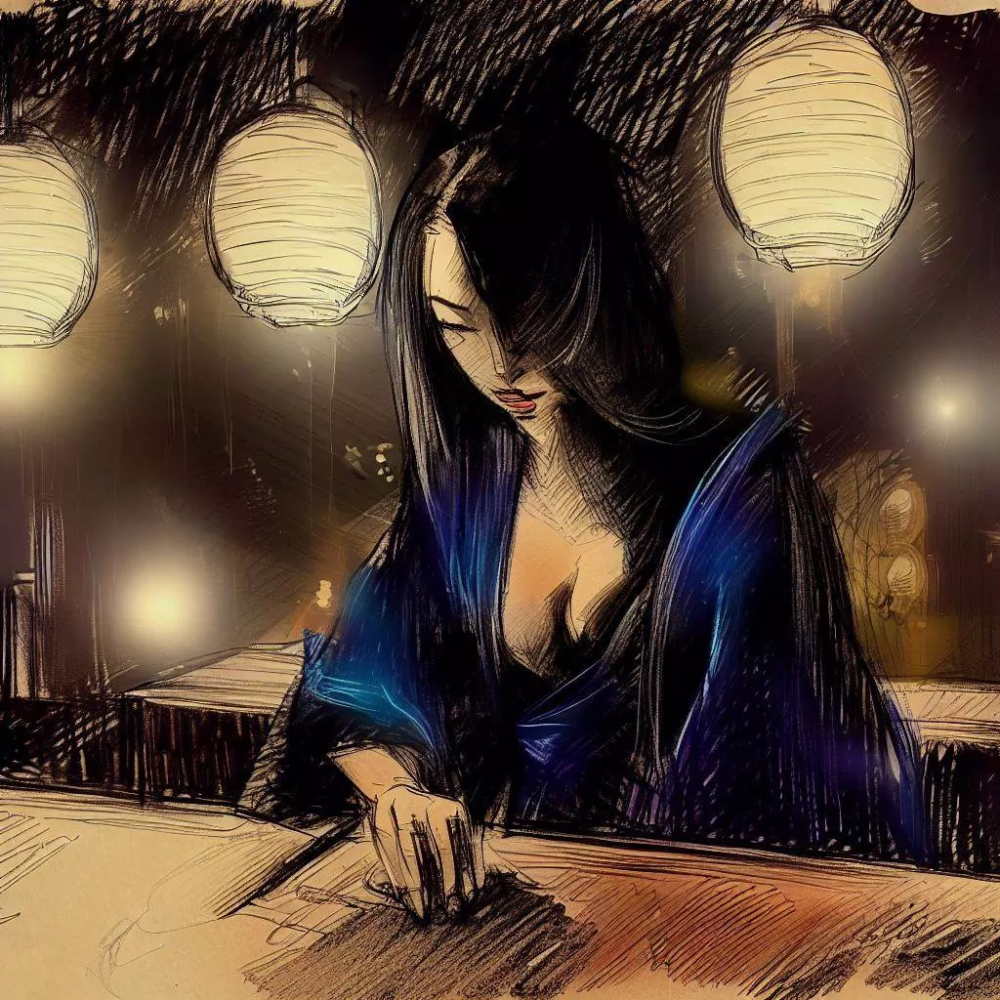

駒妖:王棋のゲームの神秘的な反響
僕は、この興味深い戦略ゲームに僕を導いてくれた駒妖に感謝の意を表したいと思います。彼女の魅力と神秘性は僕の人生に深い印象を残しました。これから続くのは、僕たちの出会いの物語であり、僕がこれらの行を通じて共有したかった貴重な思い出です。
オフィスからの脱出
長い一日が、私のオフィスの無味乾燥な雰囲気の中で過ごされ、ようやく待ち望んでいた一日の終わりが、安堵のように到来しました。日が暮れて、私は人工的で冷たいエアコンを背にして、大阪の夜の穏やかで元気づける風に身を委ねました。
日中の狂乱は、意味がなく重たいものであったが、徐々に消えていき、夜の静けさに道を譲った。一日の無興味な骨折りの中で混乱した思考は、広大な星空と都市の静かな静けさを前にして明るくなり始めました。

私は街の入り組んだ路地を歩かせてもらった。一日の単調さは、どの通り角でも溶けていき、未知の謎に取って代わられるように見えた。夜のベールの下での摩天楼の柔らかくて歓迎するようなシルエット、コンクリートの空できらめく明かりは、日中の威圧感とは対照的でした。
ショッピング街の活気ある雰囲気、路上レストランの香り、夜の会話のざわめきが、エキサイティングな都市風景を作り出していました。私の心は、疲れているにもかかわらず、知的な挑戦を求め、一日の喧騒からの逸脱を求めていました。それが、私がリージェンシー・バーという、かつて最も才能のある著名な将棋の選手たちが対戦したことで知られる場所の、控えめな看板を見つけたときでした。
この静かな路地に隠れていたこの聖域は、私に自分自身を提供し、ゲームの微妙な呼び声を私の心に囁きました。その控えめな響きと、ゲームの可能性が、私の中でやわらかなささやきと共鳴し、謎と好奇心に満ちた誘惑を描いていました。
ゲームの巣窟
リージェンシー・バーの柔らかく控えめな照明が私を歓迎し、その暖かい雰囲気は静寂感を喚起しました。その場所の静寂は、数世代にわたるプレイヤーたちの夜を賑わせ、逃避を求めてきたであろう多くの将棋の対局によって滲みていました。
ゲームの世界に身を投じる前に、カウンターで一杯の日本酒を注文しました。古いパーケットフロアが私の足音に柔らかく抗議し、私の目は控えめな光に慣れていきました。将棋の駒のやさしい音、会話のささやき、扇子のざわめきが雰囲気に神秘的なタッチを加えました。古木の香りとお香の香りが混ざり合って、私の感覚を和らげ、これからの知的な関与に備えました。
客たちは、男性も女性も、年齢問わず、熱心に将棋に興じていました。それぞれが、プレーした一手一手に結びつく緊張感、喜び、または失望を独自の方法で表現していました。それは、私の目の前で繰り広げられる戦略と頭脳の無言のバレエでした。
夜の対戦相手を探していると、一人で孤立したテーブルに座る女性に目が引きつけられました。彼女の静かな存在と微妙な美しさが私の好奇心をそそりました。決定的だが控えめな一歩で近づき、丁寧な微笑みを描き、対局を提案しました。

夜のレッスン
彼女の私の提案への返答は、顔を照らす笑顔で、言葉を必要としない黙示的な受け入れでした。
予想外の優雅さで彼女はゲーム盤を明らかにしました。それは以前は絹の布で隠されていました。私の視線はすぐにプレイ面に引きつけられましたが、すべての期待に反して、それは通常よりもコンパクトに見えました。それは私が出会うことに慣れていた伝統的な将棋盤ではなく、それぞれの側に8マスのより親密な正方形の格子でした。驚きを表現する前に、このエレガントな見知らぬ人は私の混乱を明らかにするために主導権を握り、彼女の声は穏やかな夏の風のように周囲の空気と混ざり合いました。
「これは王のゲーム、王棋です」と彼女は自信を持って宣言しました。「私たちはそれぞれ18個の駒を使ってゲームを開始します」。これらの興味深い詳細を明らかにすると、彼女の視線には楽しそうな空気が灯りました。

「このチェス盤のシルエットの中で、一つだけがその明らかな威厳で目立ちます」と彼女は特に優雅な中央の駒を指差して特に言いました。「ここに姫がいます。司教の尊厳と騎士の無限の自由を備えて、彼女は洗練と力を持って王棋盤を統治し、この現代の将棋のバリアントにロマンチシズムの息吹を注入します。」
私の驚きを見て彼女の笑顔が広がりました。彼女の目にはからかうような輝きがあり、それは彼女を取り巻く謎を高めるだけでした。彼女は盤上に駒を配置し始めました、彼女の敏捷で正確な指が私たちの将来の戦場を活気づけました。
彼女が駒を配置しているとき、私は別の相違点に気づきました：王棋盤の隅に立つルーク。「伝統的な槍はこれらのルークに置き換えられています」と彼女は私の思考を読むかのように説明し、「私たちの決闘にさらなる次元を加えます。」
駒は今、並べられていました、各ルーク、各ジェネラル、各ポーンが完璧な調和を保って並んでいました。これからの戦いを予期しながら、私はこの新たに明らかになったパズルに抗いがたく引きつけられていました。それは駒の金色の輝きと、神秘的な対戦相手の輝く視線によって、さらに魅力的になりました。
心の試練
時計のカチンコチンという音が時間の経過を示し、戦いの沈黙は盤上の駒の軽い音だけで中断されました。司教は決意をもって動き、騎士は大胆に跳び、姫は驚くほどの効率で戦場を支配しました。戦いのほとんど気づかないリズムが部屋を満たし、それに実感できる緊張感を与えました。
神秘的な対戦相手は戸惑うほどの技巧で彼女の駒を指導しました。捕らえられた駒は、消去される代わりに、巧みに再導入され、私のラインの後ろにパラシュートで降下し、戦闘に変化するダイナミックを与えました。各動きは戦術の教訓であり、各駒はほぼ外科的な精度で織られた見えないリンクで他の駒とつながっていました。
私は自分の駒を激しい決意で操作し、慎重に練られた防御で彼女の攻撃を撃退し、堪えていました。それにもかかわらず、各決定は私のエネルギー準備から引き出され、各移動はますます重くなりました。私の瞼が重くなり、疲れが地盤を得ようとしていました。
そして私が目を開けているのに苦労しているとき、眠り、その忍び寄る対戦相手が支配しました。私の体は疲れに屈し、バーの明かりが暗くなる目の前で踊っていました。私は癒しの闇に潜りました、記憶に刻まれた最後の画像は、神秘的な対戦相手の勝利の微笑みであり、それはインクの空の遠い月のように輝いていました。

夜明けの反響
時間は消え去ったかのようで、私の心を覆う暗闇に飲み込まれました。暗闇への遷移は穏やかで静かで、私を混乱させる霧の中を航行させていました。私の心は混乱の海で苦闘し、影から再浮上しようと戦っていました。
夜中に迷った船のように、私はついに日中への道を再発見しました。私の目はほとんど変わらない部屋に開き、夜明けの柔らかい光で浸かりました。王棋盤は私がそのままにしていたところにあり、夜の戦いの静かな証人でした。しかし、私の対戦相手の席は今は空で、若い女性の神秘的なオーラは夜明けの夢のように消え去っていました。
彼女の不在の重みが感じられました。空気を重くし、部屋をより静かにする定義できない虚無感でした。私の視線は王棋盤に滑り落ち、ゲームボードの隣に丁寧に折りたたまれた紙片に止まりました。私はある程度の不安を抱いてそれを拾い上げました。
一つの単語、「ありがとう」が記されており、名前「駒妖」が添えられていました。エレガントな署名、この一過性でありながら衝撃的な出会いの最後の名残は、すばやく魅力的な駒妖と王棋をプレイしてレガシーバーで過ごしました。